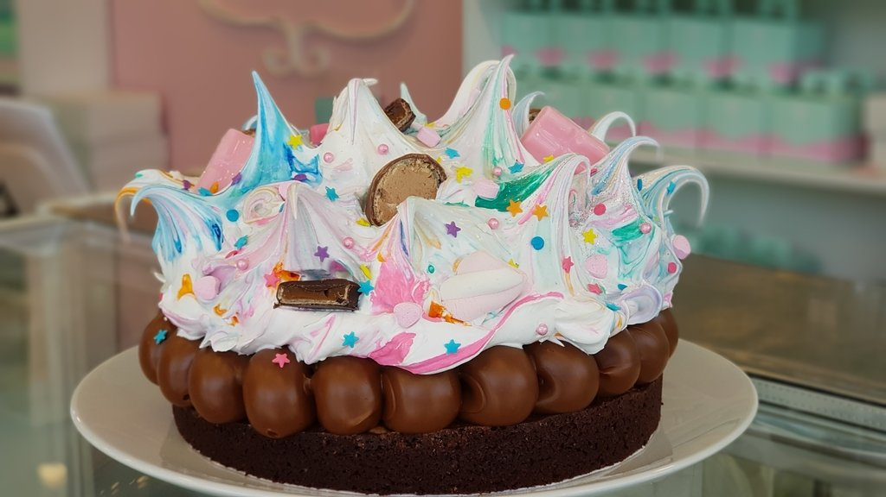
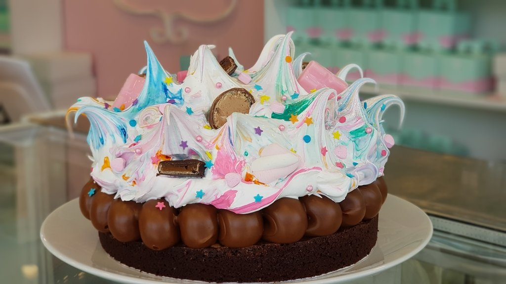
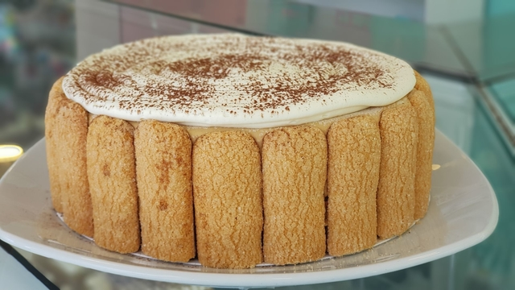
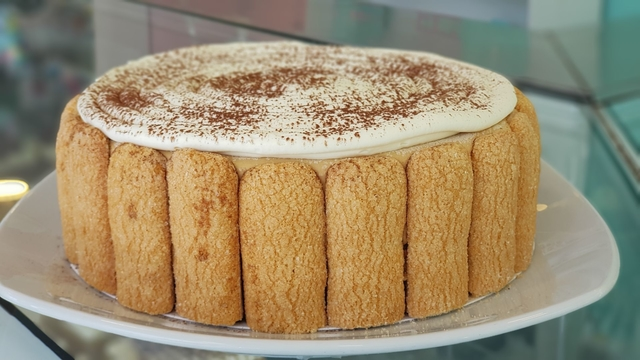

Tarta de Frutilla

- Ingredientes:
- 100 g de manteca blanda
- 2 cucharadas de azúcar
- 1 yema
- 2 cucharadas de agua fría
- 1 cucharada de vinagre
- 2 tazas de harina
- 3/4 kilo de frutillas
- 500 g de crema chantillí
- 200 g de dulce de leche
Preparación:
- Poner la harina sobre la mesa y hacer un hueco en el centro. Colocar allí la manteca blanda, la yema, el azúcar y el vinagre. Unir los ingredientes desde el centro hasta lograr una masa tierna, que no se pegotee.
- Forrar una tartera y terminar el borde en forma prolija, la masa debe quedar finita.
- Cocinar la tarta en horno caliente apoyando primero en el piso del horno por 5 minutos, y luego, pasándola al centro hasta que se note cocida. Dejar enfriar a temperatura ambiente.
- Untar la base con dulce de leche.
- Cubrir con crema chantillí (puede ser crema pastelera) y disponer frutillas cortadas al medio encima
- Si se desea, abrillantar la superficie con mermelada de frutillas, reducida al fuego con un poquito de agua y azúcar.
Brownie


- Ingredientes
- 120 gr manteca.
- 180 gr azúcar rubia.
- 180 gr chocolate semi amargo.
- 3 u huevos.
- 1 cda extracto de vainilla.
- 20 gr cacao amargo.
- 60 gr harina 0000.
- 1/4 cdita sal.
- 150 gr nueces
- 400 gr dulce de leche repostero
- Merengue italiano
Preparación:
- Derretir el chocolate junto con la manteca en microondas con lapsos de 30'', sino realizarlo a baño de María.
- En un bowl combinar huevos, azúcar y extracto de vainilla (solo hasta que se encuentre homogéneo, no necesitamos batir)!
- Incorporar la mezcla de chocolate y manteca templado, no debe estar super caliente.
- Tamizar la harina, cacao amargo y sal.
- Verter la mezcla en un molde forrado con papel aluminio o enmantecado y enharinado.
- Partir las nueces y disponerlas por encima.
- Hornear a 180°C durante 35' o hasta que su centro se mueva levemente. Dejar enfriar por completo.
- Decorar con dulce de leche y merengue coloreado y granas de colores.
Tiramisu


- Ingredientes
- 2 claras de huevo
- 4 yemas
- 100 gr. de azúcar
- 400 gr. de queso mascarpone
- 1 paquete de vainillas
- 175 ml. café
- 200 gr. de chocolate negro
- cacao en polvo o chocolate rallado
Preparación:
- Prepararemos una cafetera con el café que más nos guste.
- En un bol montaremos las claras a punto de nieve con la batidora.
- En otro bol batiremos las yemas con el azúcar, hasta conseguir una mezcla espumosa con los dos ingredientes.
- Añadir el queso mascarpone poco a poco y seguir batiendo.
- Añadiremos las claras montadas a punto de nieve y mezclaremos bien todos los ingredientes.
- En un molde rectangular iremos montando las capas con las vainillas y los empaparemos bien con el café que hemos preparado y echaremos un poco de brandy(a gusto).
- Cubriremos la capa de vainillas con la crema mascarpone que hemos elaborado en el paso 3. Espolvorear con chocolate negro rallado o cacao.
- repetimos el paso anterior la cantidad de veces que sean necesarias para cubrir el molde.
- Decoramos con vainillas alrededor si gusta, y llevamos a heladera para generar consistencia.